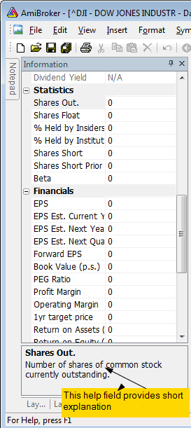

Information window

This window allows you to display and edit the symbol's preferences.
- Symbol
The short name, used in ‘Select’ window and with quotation import
functions. If you use them, please check if the ticker given in this field is
the same as that used in your quotation data source.
- Alias
The alternative ticker name. It will be useful if you, e.g., get real-time quotes and backfill from two separate data sources that use different ticker names.
- Full name
Official name of the firm.
- Code
Symbol code number.
- Web ID
Symbol Web ID - can be used when you define Profile view
- Address
Corporation's address.
- Issue
Total number of shares.
- Nominal value.
- Book value.
- Currency.
- Market
Indicates which market the symbol belongs to.
- Industry
Indicates which industry the symbol belongs to.
- Group
Indicates which group the symbol belongs to.
- Round lot size
Various instruments are traded with various "trading units" or "blocks".
For example, you can purchase a fractional number of units of a mutual fund, but
you cannot purchase fractional numbers of shares. Sometimes you have to buy
in lots of 10s or 100s. AmiBroker now allows you to specify the block size at
a global and per-symbol level.
You can define per-symbol round lot size in the Symbol->Information page.
The value of zero means that the symbol has no special round lot size and
will use "Default round lot size" (global setting) from the Automatic
Analysis settings page. If the default size is also set to zero, it means that
fractional numbers of shares/contracts are allowed.
- Tick size
This setting controls the minimum price move for a given symbol. You can define
it at a global and per-symbol level. As with round lot size, you can define
per-symbol tick size in the Symbol->Information page (pic. 3). The value
of zero instructs AmiBroker to use "default tick size" defined in
the Settings page (pic. 1) of Automatic Analysis window. If the default tick size
is also set to zero, it means that there is no minimum price move.
Note that the tick size setting affects ONLY trades exited by built-in stops
and/or ApplyStop(). The backtester assumes that price data follow tick size
requirements and it does not change the price arrays supplied by the user.
So, specifying tick size makes sense only if you are using built-in stops, so exit points are generated at "allowed" price levels instead of calculated
ones. For example, in Japan, you cannot have fractional parts of a yen, so you
should define the global tick size to 1, which means built-in stops exit trades
at integer levels.
- Margin deposit - explained in Backtesting systems
for futures contracts
- Point value - explained in Backtesting systems
for futures contracts
- Continuous quotations
Enables continuous trading for this symbol (this enables manual entry open/high/low/volume controls and candlestick charts), otherwise, the symbol is traded with price fixing.
- Index
Specifies if the symbol belongs to Indexes category.
- Favourites
Specifies if the symbol belongs to Favourites category.
- Use only local database for this symbol
Indicates that the symbol is not updated via the plugin in real-time database. This field is checked by default if the symbol is added into the real-time database as a result of an import from an ASCII file (including AmiQuote downloads). This setting allows you to keep additional symbols in the database and prevent the plugin from overwriting the imported data.
For an explanation of fundamental data fields, please read "Tutorial:
Using fundamental data" chapter of this guide.